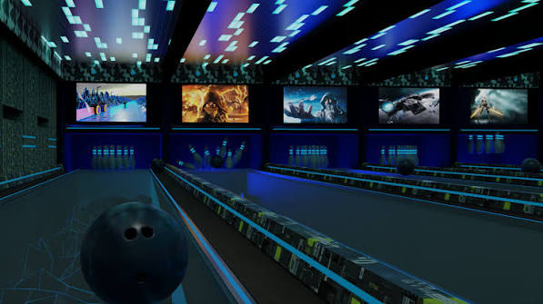

Bowling Towel
A Bowling towel or shammy is an essential accessory that keeps your bowling ball and hands clean, ensuring a predictable and consistent reaction on the lane. Bowling lanes are coated with oil. As your ball rolls, it picks up oil residue. Wiping the ball between shots prevents oil from saturating the coverstock, which stops the ball from hooking late or sliding unpredictably.
Bowling Shoes
Bowling shoes are designed to provide the grip and support needed for a proper bowling stance. They have a special sole that allows for smooth sliding on the approach, while the upper part of the shoe provides comfort and support. It's important to choose the right pair of bowling shoes that fit well and offer the necessary performance features.
Bowling Bags
Bowling bags are used to carry and protect your bowling equipment. They come in various sizes and styles, from small single-ball bags to larger multi-ball bags. A good bowling bag should have enough space to hold your ball, shoes, and other accessories, while also providing protection from scratches and damage. Look for a bag with padded compartments and durable materials for long-lasting use.